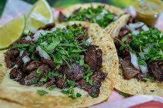

Tacos de Arrachera

Finished product
Ingredients
- Tortillas de maiz
- Arrachera (trimmed and tenderized)
- Onion
- Cilantro
- Lime
- Goya
- Mexican lager
- Salt & Pepper
Steps
- Marinate Arrachera in beer, lime, Goya, salt, and pepper.
- Let marinate for 2-8 hours
- Cook meat on grill to preferred wellness
- While meat is cooking, finely chop onion and cilantro and set aside
- Heat up tortillas on grill or in microwave
- Assemble tacos by starting with tortillas, placing meat, and adding cilantro and onion
- (Optional) Add salsa if available